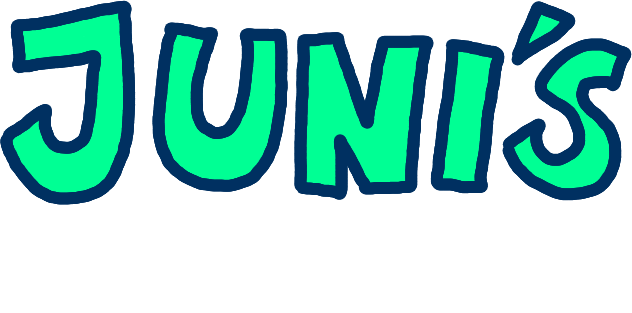

Juni's Asylum is a planned horror adventure game, a spiritual successor to a older Jonnil Games title called "Spook: The Clinic". This new game is planned to reimagine the original concept and character. With much more experience making games and a larger team, Juni's Asylum aims to be Jonnil Games' most ambitious project yet!
Immersive Horror
Every shadow and sound builds a chilling atmosphere—classic indie horror, refined.
Challenging Platforming
Jump, dash, and thread through treacherous spaces that test reflex and nerve.
Puzzles & Secrets
Hidden clues, layered puzzles, and easter eggs reveal the asylum’s deeper truth.
Branching Narratives
Your choices matter—multiple endings and paths invite replays and theorycrafting.
Current Development Status
Juni's Asylum is currently in very early development stages. Mostly prototyping and concept work is being done at this time. It will probably be a while before the game is ready for final release, but we are excited to share our progress along the way! I want to make sure there will be plenty of demo builds to try out as developments continues, and able to gather feedback from players to help shape the experience. We are still going to be following what we want to achieve with the game, but some details may change as we progress further into development.
Early Development Snapshots